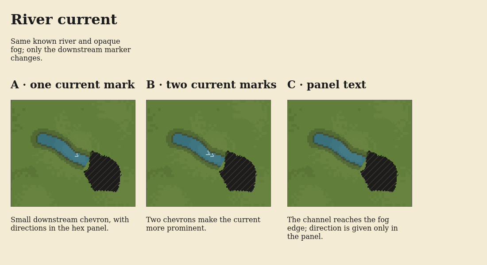
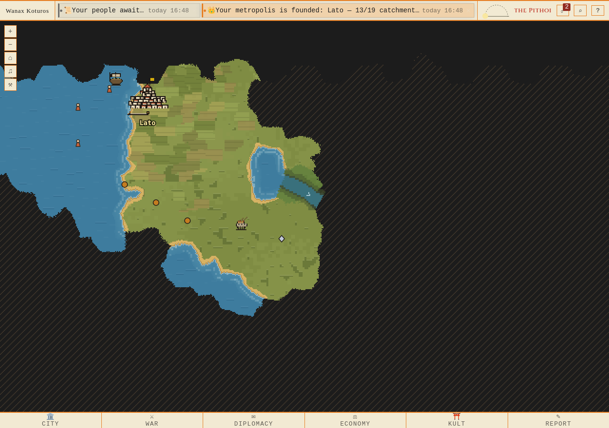
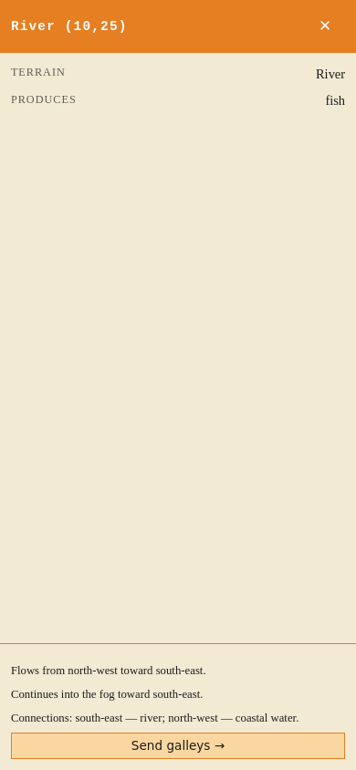
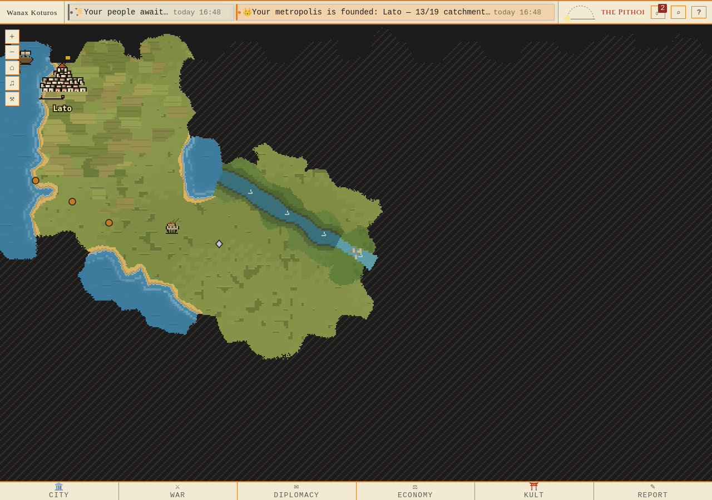
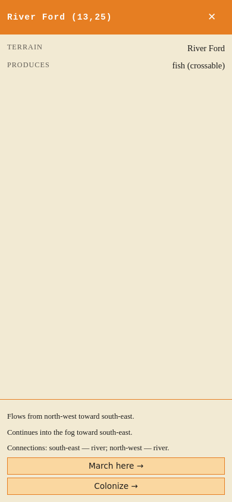
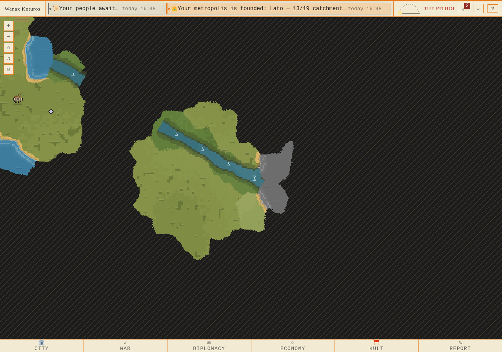
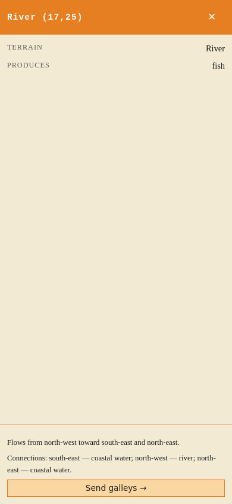

A known river shows its current and connected terrain through fog. The neighbouring tile remains hidden. Static geography is saved once, never recalculated on sight.
Three marker alternatives · A is implemented. Contract and checks · Native provenance






